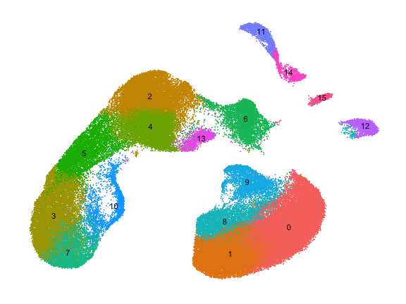
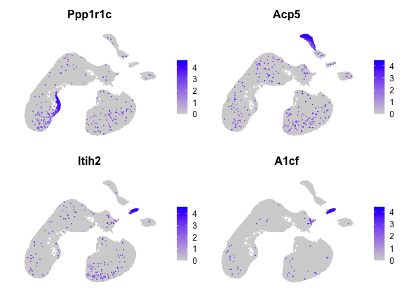

a05_moca_100k.RmdHere we apply haystack to 100k cells from the Mouse
Organogenesis Cell Atlas (MOCA). The sparse matrix data was downloaded
from the MOCA
website. The data was converted into a Seurat object and processed
following the standard
pipeline.
## An object of class Seurat
## 16811 features across 100000 samples within 1 assay
## Active assay: RNA (16811 features, 2000 variable features)
## 2 dimensional reductions calculated: pca, umap
We run haystack using PCA coordinates with 50 PCs.
system.time({
res <- haystack(x, coord="pca")
})## user system elapsed
## 256.045 28.569 284.612It takes around 5 minutes to complete in a standard personal
computer. Here we show the top 10 genes selected by
haystack.
top <- show_result_haystack(res)
head(top, n=10)## D_KL log.p.vals log.p.adj
## Ppp1r1c 0.25684566 -202.6767 -198.4511
## Acp5 0.13324559 -173.9745 -169.7489
## Itih2 0.19905815 -168.2541 -164.0285
## A1cf 0.27878610 -161.4285 -157.2029
## Kel 0.08720005 -158.6047 -154.3791
## Rhag 0.08512571 -157.6347 -153.4091
## Ermap 0.08432139 -157.2455 -153.0199
## Pkhd1l1 0.09157942 -156.9557 -152.7301
## Spta1 0.08178285 -155.5603 -151.3347
## Gm43449 0.16349201 -155.3943 -151.1687And here we plot the expression of the top 4 genes.
FeaturePlot(x, head(rownames(top), 4), order=TRUE) & NoAxes()